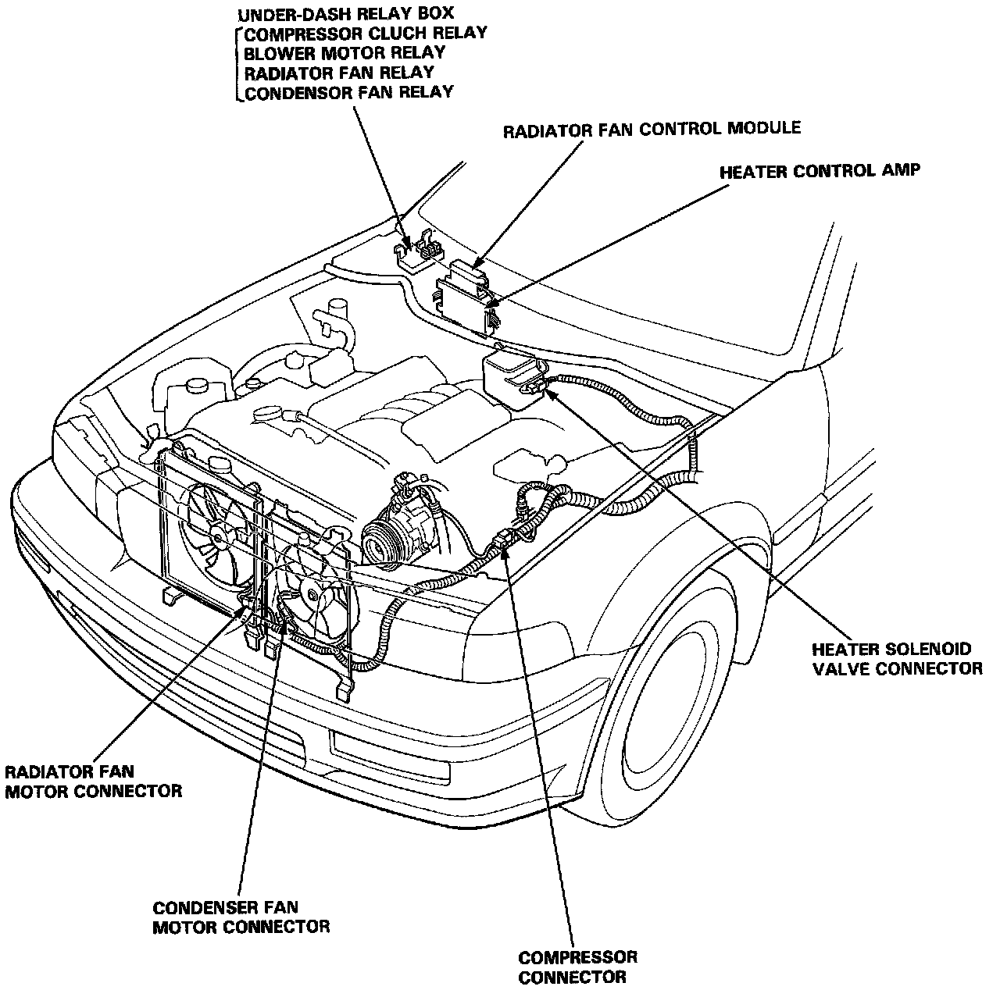
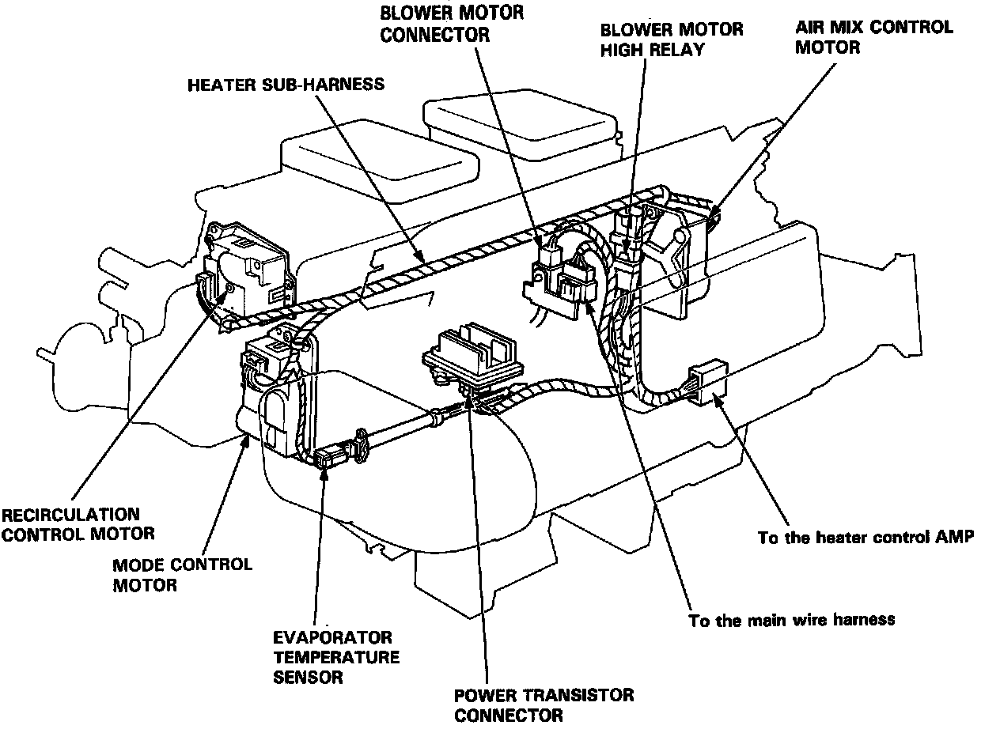

Operation CHARM
: Car repair manuals for everyone.
Home
>>
Acura
>>
1992
>>
Vigor L5-2451cc 2.5L SOHC G25A4 FI
>>
Repair and Diagnosis
>>
Heating and Air Conditioning
>>
Locations
>>
Wiring / Connector Locations
Wiring / Connector Locations
Engine Compartment

Heater-Evaporator Unit
